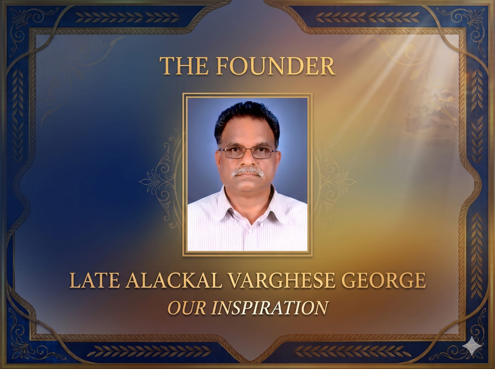
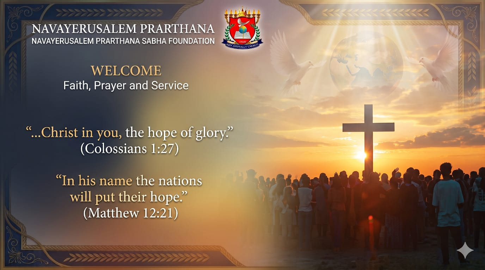

Faith, Prayer, and Service – "...Christ in you, the hope of glory." (Colossians 1:27)

Late Founder Alackal Varghese George: In 1992, he experienced a profound divine encounter when he saw a torch-like light coming from the sky directly into his room through the roof at night. During this encounter, he was led to read **Isaiah 59:21**:
"As for me, this is my covenant with them, says the Lord. My Spirit who is on you, and my words that I have put in your mouth will not depart from your mouth..."
In a subsequent encounter, God called him the "New Peter of New Jerusalem", a ministry entrusted to him and his family to serve people for the Kingdom of God. Hearing God say, "Now you are a policeman, I will make you a General in my kingdom," he chose to resign from his government job and sell his property to serve the Lord and His people full-time.
Co-Founder Biju Alackal George (Son): On November 1, 1991, he encountered the presence of God and received a deep revelation from Ecclesiastes 2:11–13 regarding the vanity of worldly things and the surpassing value of divine wisdom. Guided by ongoing spiritual visions and inner promptings, he became a disciple of Jesus Christ.
After serving voluntarily in various capacities, his calling as an **Apostle of Lord Jesus** was confirmed. Following the example of Abraham, he left his native place, relatives, and friends to travel to North India, where the Lord continues to work with him, confirming His word through signs following.

We believe in one God of whom are all things (1 Corinthians 8:6, Ephesians 4:6). He gives food to all living beings regardless of color, creed, or class (Matthew 6:26), and views all humans as His offspring (Acts 17:28–29).
God shows no partiality; in every nation, whoever fears Him and works righteousness is accepted by Him (Acts 10:34–35, 1 Peter 3:12). God is universal (Psalm 24:1) and loves the entire world (John 3:16–17).
Our Dream: To spread truth and love to establish peace and unity among nations, envisioning a world without boundaries or wars—full of righteousness and peace.
While studies on prophets and spiritual leaders across the world (such as Moses, Buddha, Jesus, Muhammad, Adi Shankaracharya, Swami Vivekananda, and Mahatma Gandhi) reveal similarities and differences, our venture focuses on knowing God through the doctrine and example of Lord Jesus Christ.
Jesus taught that God is Spirit (John 4:24), invisible (John 1:14), and incomprehensible (Luke 10:22). Because His Holy Spirit dwells within us, we are the temple of God (1 Corinthians 3:16), equipped with His power (Ephesians 3:20).
Our Core Mission: To take the Gospel of Jesus Christ to the world, equipping the saints for the work of ministry, building up the body of Christ, and helping everyone attain the unity of faith and the full stature of Christ (Ephesians 4:12–13).